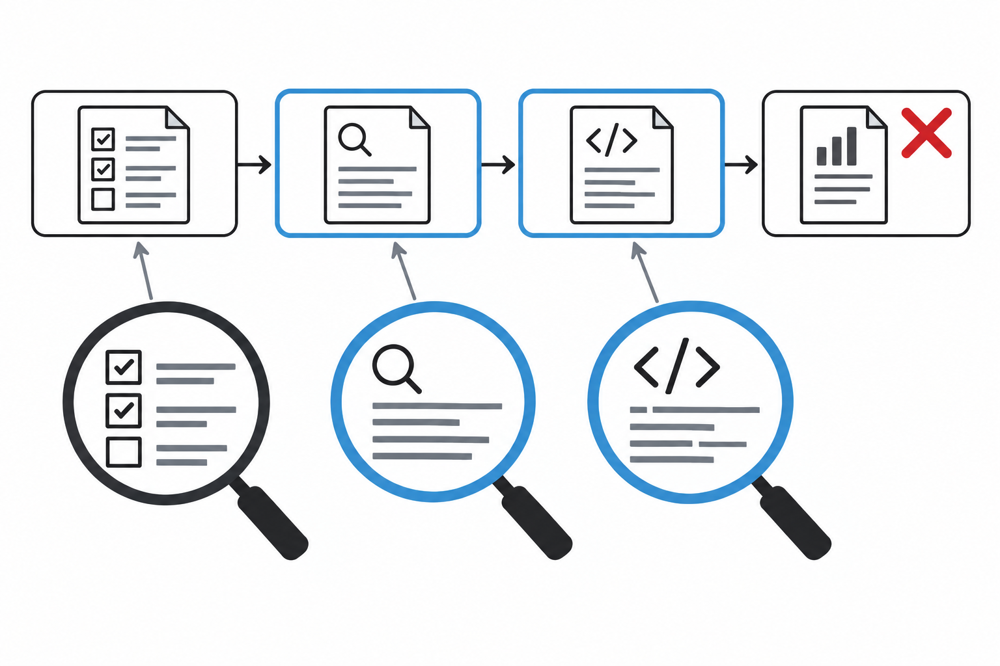
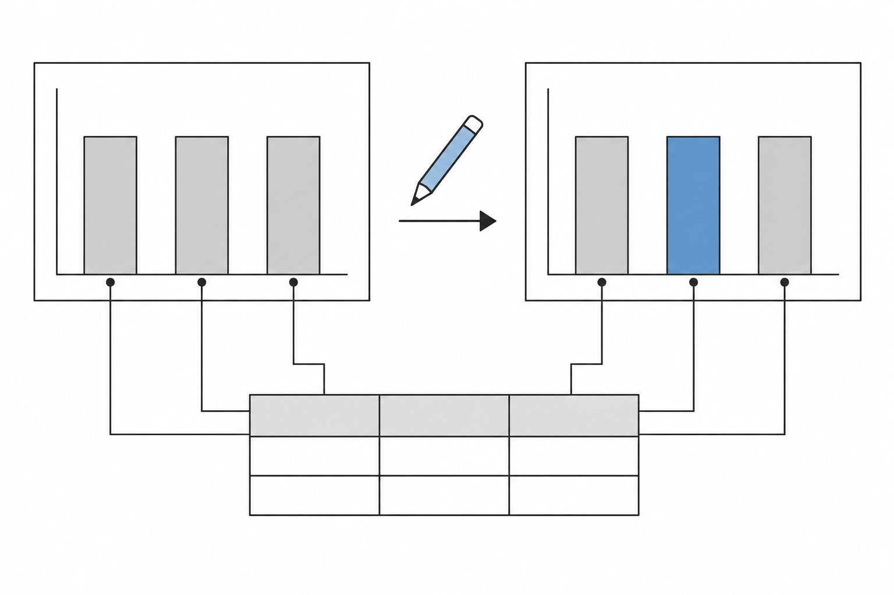
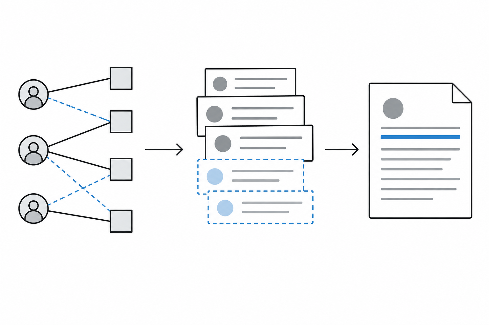
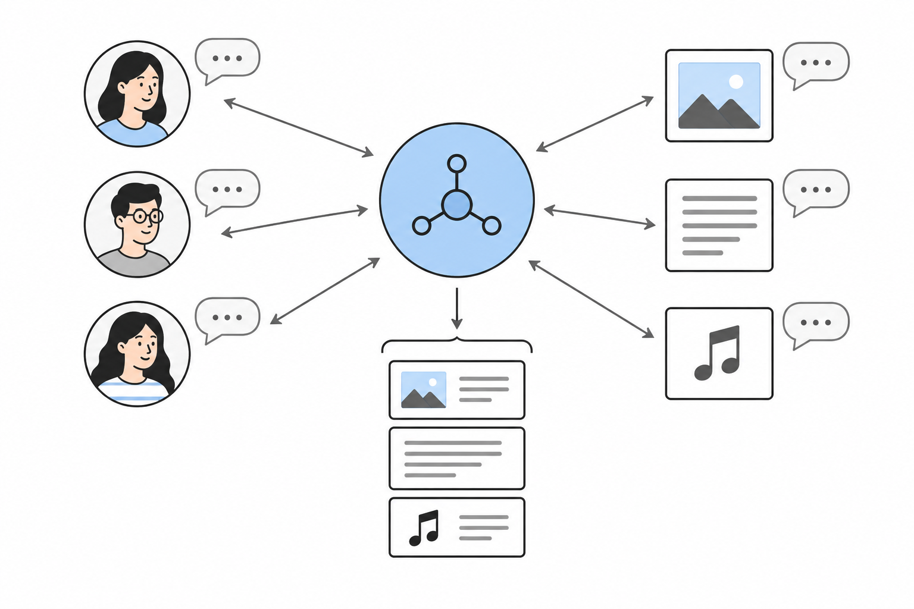
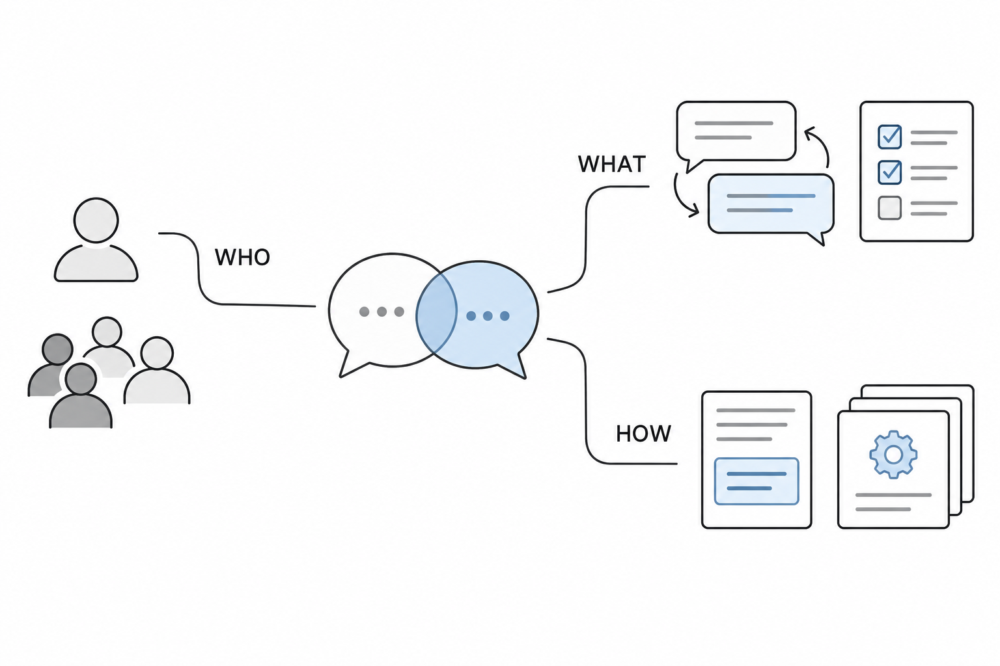
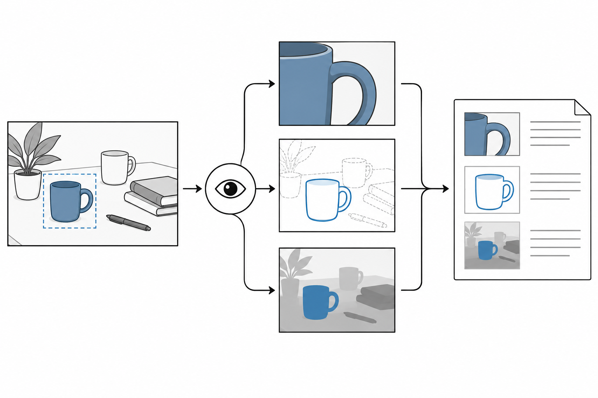

My research focuses on generative AI, large language models (LLMs), and AI agents. I study how agents reason and collaborate, and how language models can support personalized recommendations and data analytics.
I received my Ph.D. in Computer Science and Engineering from POSTECH in 2015, advised by Hwanjo Yu. My doctoral research focused on mutation profiles for patient search and cancer subtype stratification.
Experience & education
Time compressed after 2017
Full details
- FEB 2008 · POSTECH
- B.S. in Computer Science and Engineering
Pohang University of Science and Technology - AUG 2008 — AUG 2015 · POSTECH
- Ph.D. in Computer Science and Engineering
Advisor: Hwanjo Yu · Mutation profiles, patient search, and cancer subtype stratification. - SEP 2010 — MAY 2011 · Microsoft Research Asia
- Research Intern · Online Advertising
Mentors: Tie-Yan Liu & Tao Qin · Excellent Intern Certificate - JUN — AUG 2011 · Microsoft Research
- Research Intern · Natural Language Processing
Redmond · Mentor: Kristina Toutanova - AUG — DEC 2015 · Adobe Research
- Research Intern · Systems Technology Lab
Mentor: Eunyee Koh - FEB — MAY 2016 · Bagelcode
- Data Analyst
Bagelcode - JUL 2016 — PRESENT · Adobe Research
- Senior Research Scientist
Large language models, AI agents, and intelligent analytics.
Selected publications
2026 6 papers

Rethinking Failure Attribution in Multi-Agent Systems: A Multi-Perspective Benchmark and Evaluation
When several AI agents fail together, there may be more than one reasonable explanation. MP-Bench evaluates failure diagnosis from multiple perspectives, so debugging is not judged against a single assumed root cause.Yeonjun In, Mehrab Tanjim, Jayakumar Subramanian, Sungchul Kim , Uttaran Bhattacharya, Wonjoong Kim, Sangwu Park, Somdeb Sarkhel, Chanyoung Park, ICML'26 FAGEN (poster)
Read paper ↗
Charts Are Not Images: On the Challenges of Scientific Chart Editing
A chart edit must preserve the meaning of its data, not just look convincing. FigEdit tests changes to scientific charts and shows why image-editing models and pixel-based scores can miss structurally incorrect results.Li Li, Ryan A. Rossi, Sungchul Kim , Sunav Choudhary, Franck Dernoncourt, Puneet Mathur, Zhengzhong Tu, Yue Zhao, ICLR'26 (poster)
Read paper ↗
Reasoning-Based Personalized Generation for Users with Sparse Data
How can an AI personalize text for someone with very little history? GraSPeR predicts likely user–item connections, generates supporting synthetic context, and combines it with real history to guide personalized responses.Bo Ni, Branislav Kveton, Samyadeep Basu, Subhojyoti Mukherjee, Leyao Wang, Franck Dernoncourt, Sungchul Kim , Seunghyun Yoon, Zichao Wang, Ruiyi Zhang, Puneet Mathur, Jihyung Kil, Jiuxiang Gu, Nedim Lipka, Yu Wang, Ryan A. Rossi, Tyler Derr, ICLR'26
Read paper ↗
Multi-Agent Collaborative Filtering: Orchestrating Users and Items for Agentic Recommendations
MACF turns similar users and relevant items into collaborating AI agents. An orchestrator manages their discussion and recruits useful participants, bringing collaborative filtering signals into an agent-based recommender.Yu Xia, Sungchul Kim , Tong Yu, Ryan A. Rossi, Julian McAuley, WWW'26
Read paper ↗
A Survey on LLM-based Conversational User Simulation
A guide to using language models as simulated conversational users. The survey organizes who is simulated, what behavior is modeled, and how simulators are built and evaluated, with open questions about realistic and reliable simulation.Bo Ni, Yu Wang, Leyao Wang, Branislav Kveton, Franck Dernoncourt, Yu Xia, Hongjie Chen, Reuben Luera, Samyadeep Basu, Subhojyoti Mukherjee, Puneet Mathur, Nesreen Ahmed, Junda Wu, Li Li, Huixin Zhang, Ruiyi Zhang, Tong Yu, Sungchul Kim , Jiuxiang Gu, Zhengzhong Tu, Alexa Siu, Zichao Wang, David Yoon, Nedim Lipka, Namyong Park, Zihao Lin, Trung Bui, Yue Zhao, Tyler Derr, Ryan A. Rossi, EACL'26
Read paper ↗
VipAct: Visual-Perception Enhancement via Specialized VLM Agent Collaboration and Tool-use
VipAct helps a vision-language model inspect details it might otherwise miss. A coordinating agent works with specialist agents and visual tools, combining their evidence to answer questions that require precise visual understanding.Zhehao Zhang, Ryan A. Rossi, Tong Yu, Franck Dernoncourt, Ruiyi Zhang, Jiuxiang Gu, Sungchul Kim , Xiang Chen, Zichao Wang, Nedim Lipka, AAAI'26
Read paper ↗
2025 20 papers
SAND: Boosting LLM Agents with Self-Taught Action Deliberation
SAND teaches an AI agent to compare possible actions before choosing one. It creates its own deliberation examples using sampled actions and feedback from execution, then learns from those examples through repeated fine-tuning.Yu Xia, Yiran Jenny Shen, Junda Wu, Tong Yu, Sungchul Kim, Ryan A. Rossi, Lina Yao, Julian McAuley, EMNLP’25
Source ↗Disambiguation in Conversational Question Answering in the Era of LLMs and Agents: A Survey
People often ask questions with several possible meanings. This survey explains how conversational systems detect ambiguity, rewrite questions, cover multiple interpretations, or ask for clarification, and how these choices are evaluated.Mehrab Tanjim, Yeonjun In, Xiang Chen, Victor Bursztyn, Ryan A. Rossi, Sungchul Kim, Guang-Jie Ren, Vaishnavi Muppala, Shun Jiang, Yongsung Kim, Chanyoung Park, EMNLP’25
Source ↗Mitigating Visual Knowledge Forgetting in MLLM Instruction-tuning via Modality-decoupled Gradient Descent
Teaching a multimodal model new instructions can weaken visual knowledge it already learned. This work separates parts of the training update to preserve rich visual representations while still adapting to the new task.Junda Wu, Yuxin Xiong, Xintong Li, Yu Xia, Yu Wang, Tong Yu, Sungchul Kim, Ryan A. Rossi, Lina Yao, Jingbo Shang, Julian McAuley, EMNLP’25 Findings
Source ↗Is Safety Standard Same for Everyone? User-Specific Safety Evaluation of Large Language Models
A response that is safe for one user may be inappropriate for another. U-SAFEBENCH tests whether language models account for individual user profiles, and examines a reasoning-based way to improve that behavior.Yeonjun In, Wonjoong Kim, Kanghoon Yoon, Sungchul Kim, Mehrab Tanjim, Sangwu Park, Kibum Kim, Chanyoung Park, EMNLP’25 Findings
Source ↗LaMP-Cap: Personalized Figure Caption Generation With Multimodal Figure Profiles
LaMP-Cap studies captions that match an author's style and context. Its dataset provides related figures, captions, and surrounding text as a multimodal profile, letting a model use more than a generic captioning prompt.Ho Yin Sam Ng, Ting-Yao Hsu, Aashish Anantha Ramakrishnan, Branislav Kveton, Nedim Lipka, Franck Dernoncourt, Dongwon Lee, Tong Yu, Sungchul Kim, Ryan A. Rossi, Ting-Hao Kenneth Huang, EMNLP’25 Findings
Source ↗Augment before You Try: Knowledge-Enhanced Table Question Answering via Table Expansion
A table may not contain everything needed to answer a question. This approach puts missing external knowledge into an additional table, then queries the original and added tables together with SQL.Yujian Liu, Jiabao Ji, Tong Yu, Ryan A. Rossi, Sungchul Kim, Handong Zhao, Ritwik Sinha, Yang Zhang, Shiyu Chang, EMNLP’25 Findings
Source ↗Traceable and Explainable Multimodal Large Language Models: An Information-Theoretic View
This work studies how text instructions change the visual information inside a multimodal model. Information-theoretic measurements and an interpretable concept space help trace those changes across model layers.Zihan Huang, Junda Wu, Rohan Surana, Raghav Jain, Tong Yu, Raghavendra Addanki, David Arbour, Sungchul Kim , Julian McAuley, COLM'25
Source ↗Doc-React: Multi-page Heterogeneous Document Question-answering
Doc-React answers questions that span text and figures across several document pages. It repeatedly refines what to retrieve using feedback, seeking useful evidence while reducing uncertainty instead of relying on one retrieval pass.Junda Wu, Yu Xia, Tong Yu, Xiang Chen, Sai Sree Harsha, Akash V Maharaj, Ruiyi Zhang, Victor Bursztyn, Sungchul Kim , Ryan A. Rossi, Julian McAuley, Yunyao Li, Ritwik Sinha , ACL 2025
Source ↗From Selection to Generation: A Survey of LLM-based Active Learning
Active learning seeks useful training data with less labeling effort. This survey examines how language models can select examples, supply annotations, and generate new examples, and how those roles change the learning loop.Yu Xia, Subhojyoti Mukherjee, Zhouhang Xie, Junda Wu, Xintong Li, Ryan Aponte, Hanjia Lyu, Joe Barrow, Hongjie Chen, Franck Dernoncourt, Branislav Kveton, Tong Yu, Ruiyi Zhang, Jiuxiang Gu, Nesreen K. Ahmed, Yu Wang, Xiang Chen, Hanieh Deilamsalehy, Sungchul Kim , Zhengmian Hu, Yue Zhao, Nedim Lipka, Seunghyun Yoon, Ting-Hao Kenneth Huang, Zichao Wang, Puneet Mathur, Soumyabrata Pal, Koyel Mukherjee, Zhehao Zhang, Namyong Park, Thien Huu Nguyen, Jiebo Luo, Ryan A. Rossi, Julian McAuley, ACL 2025
Source ↗Click, Type, Repeat: A Comprehensive Survey on GUI Agents
A survey of AI agents that operate computers by clicking, typing, and reading screens. It organizes their perception, reasoning, planning, and action components, alongside training methods, benchmarks, and unresolved challenges.Dang Nguyen, Jian Chen, Yu Wang, Gang Wu, Namyong Park, Zhengmian Hu, Hanjia Lyu, Junda Wu, Ryan Aponte, Yu Xia, Xintong Li, Jing Shi, Hongjie Chen, Viet Dac Lai, Zhouhang Xie, Sungchul Kim , Ruiyi Zhang, Tong Yu, Mehrab Tanjim, Nesreen K. Ahmed, Puneet Mathur, Seunghyun Yoon, Lina Yao, Branislav Kveton, Jihyung Kil, Thien Huu Nguyen, Trung Bui, Tianyi Zhou, Ryan A. Rossi, Franck Dernoncourt , ACL 2025
Source ↗Knowledge-Aware Query Expansion with Large Language Models for Textual and Relational Retrieval
A search request can specify both meaning and relationships, such as product compatibility. This method uses a knowledge graph to expand queries with relational context as well as text, helping retrieval respect those structured requirements.Yu Xia, Junda Wu, Sungchul Kim , Tong Yu, Ryan A. Rossi, Haoliang Wang, Julian McAuley, NAACL'25
Source ↗Diversify-verify-adapt: Efficient and Robust Retrieval-Augmented Ambiguous Question Answering
An ambiguous question can need evidence for several interpretations. DIVA broadens the retrieved material, checks its quality, and adjusts the answering strategy, balancing answer coverage with the cost of repeated retrieval.Yeonjun In, Sungchul Kim , Ryan A. Rossi, Mehrab Tanjim, Tong Yu, Ritwik Sinha, Chanyoung Park, NAACL'25
Source ↗Self-Debiasing Large Language Models: Zero-Shot Recognition and Reduction of Stereotypes
Can a language model reduce its own stereotyping without retraining? This work tests simple explanation and reprompting strategies, using the model's existing capabilities to recognize and revise biased responses.Isabel O. Gallegos, Ryan Aponte, Ryan A. Rossi, Joe Barrow, Mehrab Tanjim, Tong Yu, Hanieh Deilamsalehy, Ruiyi Zhang, Sungchul Kim , Franck Dernoncourt, Nedim Lipka, Deonna Owens, Jiuxiang Gu, NAACL'25
Source ↗Interactive Visualization Recommendation with Hier-SUCB
Different people want different charts, and their preferences can change during analysis. Hier-SUCB learns from interactive feedback to recommend visualizations while balancing familiar choices with exploration of new ones.Songwen Hu, Ryan A. Rossi, Tong Yu, Junda Wu, Handong Zhao, Sungchul Kim , Shuai Li, WWW’25
Source ↗Personalizing Data Delivery: Investigating User Characteristics and Enhancing LLM Predictions
Would you rather see a chart, a table, or a written answer? This user study investigates those preferences and tests how well language models predict them, including when examples of a user's past choices are available.Reuben Luera, Ryan Rossi, Franck Dernoncourt, Alexa Siu, Sungchul Kim , Tong Yu, Ruiyi Zhang, Xiang Chen, Nedim Lipka, Zhehao Zhang, Seon Gyeom Kim and Tak Yeon Lee, WWW’25 Short Paper
Source ↗Evaluation-Free Time-Series Forecasting Model Selection via Meta-Learning
Choosing a forecasting model should not require training every candidate on each new dataset. AutoForecast learns from past forecasting tasks to recommend a suitable model quickly, using both dataset similarity and previous performance patterns.Mustafa Abdallah, Ryan Rossi, Kanak Mahadik, Sungchul Kim , Handong Zhao, Saurabh Bagchi, TKDD
Source ↗Probabilistic Hypergraph Recurrent Neural Networks for Time-series Forecasting
Many time series interact in groups rather than just pairs. PHRNN models these group relationships with a probabilistic hypergraph, allowing connections to vary instead of treating them as permanently fixed.Hongjie Chen, Ryan A. Rossi, Sungchl Kim , Kanak Mahadik, Hoda Eldardiry, KDD’25
Source ↗A Quantitative Metric Selection Approach for Time-series Forecasting Foundation Models
The metric used to compare forecasting models can change which model wins. This work characterizes properties such as sensitivity to large values and outliers, helping analysts choose a metric that fits their priorities.Hongjia Chen, Aksha Mehra, Josh Kimball, and Sungchul Kim, ICASSP'25
Source ↗Multi-LLM Collaborative Caption Generation in Scientific Documents
Several language models divide the work of writing scientific figure captions: checking training examples, proposing different captions, and selecting and refining a candidate. The goal is to combine visual and textual evidence into more informative descriptions.Jaeyoung Kim, Jongho Lee, Hong-Jun Choi, Ting-Yao Hsu, Chieh-Yang Huang, Sungchul Kim , Ryan A. Rossi, Tong Yu, C. Lee Giles, Ting-Hao Kenneth Huang, Sungchul Choi , AAAI 2025 Workshop AI4Research
Source ↗Understanding How Paper Writers Use AI-Generated Captions in Figure Caption Writing
How do researchers actually use AI-written captions? In a study of authors revising figures from their own papers, participants often copied and refined suggestions, while complex figures exposed limitations and opportunities for better writing tools.Ho Yin Sam Ng, Ting-Yao Hsu, Jiyoo Min, Sungchul Kim , Ryan A. Rossi, Tong Yu, Hyunggu Jung, Ting-Hao Kenneth Huang, AAAI 2025 Workshop AI4Research
Source ↗
2024 9 papers
Are Large Language Models Capable of Causal Reasoning for Sensing Data Analysis?
Can language models reason about causes rather than just correlations in sensor data? This paper examines that question using environmental measurements and socioeconomic factors, where intertwined variables can make simple comparisons misleading.Zhizhang Hu, Yue Zhang, Ryan Rossi, Tong Yu, Sungchul Kim , Shijia Pan, EdgeFM Workshop @ MobiSys 2024
Source ↗Hallucination Diversity-Aware Active Learning for Text Summarization
Not all hallucinations have the same cause or form. HADAS selects a diverse set of factual errors for human annotation, helping fine-tuning reduce hallucinations in summaries with a smaller labeling budget.Yu Xia, Xu Liu, Tong Yu, Sungchul Kim , Ryan A. Rossi, Anup Rao, Tung Mai, Shuai Li, NAACL 2024
Source ↗DeCoT: Debiasing Chain-of-Thought for Knowledge-Intensive Tasks in Large Language Models via Causal Intervention
Adding facts to a prompt does not guarantee sound reasoning. DeCoT uses a causal framework to reduce misleading associations in chain-of-thought reasoning, helping a model make better use of relevant external knowledge.Junda Wu, Tong Yu, Xiang Chen, Haoliang Wang, Ryan Rossi, Sungchul Kim , Anup Rao, Julian McAuley, NAACL 2024
Source ↗Editing Partially Observable Networks via Graph Diffusion Models
Real networks often contain missing or incorrect connections. SGDM uses diffusion over subgraphs to remove unwanted structure, fill in missing regions, or reshape part of a network while conditioning on the observed graph.Puja Trivedi, Ryan A. Rossi, David Arbour, Tong Yu, Frank Dernoncourt, Sungchul Kim , Nedim Lipka, Namyong Park, Nesreen K. Ahmed, Danai Koutra, ICML 2024
Source ↗Bias and Fairness in Large Language Models: A Survey
An organized guide to social bias in language models. It distinguishes types of harm, ways to measure bias, datasets used for evaluation, and interventions at different stages of the modeling pipeline.Isabel O. Gallegos, Ryan A. Rossi, Joe Barrow, Md Mehrab Tanjim, Sungchul Kim , Franck Dernoncourt, Tong Yu, Ruiyi Zhang, Nesreen K. Ahmed, Computational Linguistics 2024
Source ↗SciCapenter: Supporting Caption Composition for Scientific Figures with Machine-Generated Captions and Ratings
SciCapenter is an interactive assistant for writing scientific figure captions. It proposes captions, scores their quality, and offers a checklist, letting authors edit and reassess their writing in an iterative workflow.Ting-Yao Hsu, Chieh-Yang Huang, Shih-Hong Huang, Ryan Rossi, Sungchul Kim , Tong Yu, Professor C Lee Giles, Dr. Ting-Hao Kenneth Huang, CHI 2024 Late-Breaking Work
Source ↗Fairness-Aware Graph Neural Networks: A Survey
Graph neural networks can inherit or amplify unfairness through data and neighborhood aggregation. This survey organizes fairness measures, benchmark datasets, and mitigation methods used before, during, and after training.April Chen, Ryan A. Rossi, Namyong Park, Puja Trivedi, Yu Wang, Tong Yu, Sungchul Kim, Franck Dernoncourt, Nesreen K. Ahmed, TKDD
Source ↗Evolving Super Graph Neural Networks for Large-scale Time-Series Forecasting
Forecasting thousands of related time series can make a graph model expensive. ESGNN groups strongly related series into super-nodes and updates their connections efficiently, trading a small amount of predictive accuracy for substantial computational savings.Hongjia Chen, Ryan Rossi, Kanak Mahadik, Sungchul Kim , Hoda Eldardiry, PAKDD'24
Source ↗Which LLM to Play? Convergence-Aware Online Model Selection with Time-Increasing Bandits
Which language model deserves more training or more requests? This work studies online model selection when models improve and then level off, so decisions can account for learning progress as well as the cost of exploration.Yu Xia, Fang Kong, Tong Yu, Liya Guo, Ryan Rossi, Sungchul Kim , Shuai Li, TheWebConference'24
Source ↗
Older 75 papers
Content-aware Progressive Image Compression and Syncing
When people edit an image together, useful details should arrive quickly. This compression method prioritizes pixels using information content and sends them progressively, aiming to make image synchronization more helpful under limited bandwidth.2023 · Junda Wu, Haoliang Wang, Tong Yu, Gang Wu, Stefano Petrangeli, Handong Zhao, Sungchul Kim , Viswanathan Swaminathan, IEEE ISM 2023
Source ↗GPT-4 as an Effective Zero-Shot Evaluator for Scientific Figure Captions
This paper tests GPT-4 as a judge of scientific figure captions without requiring a reference caption. It compares model scores with human judgments, studying whether this can reduce the cost of evaluating captioning systems.2023 · Ting-Yao Hsu, Chieh-Yang Huang, Ryan Rossi, Sungchul Kim , C. Giles, Ting-Hao Huang, EMNLP'23-Findings
Source ↗Hypergraph Neural Networks for Time-series Forecasting
A group of machines or sensors may influence one another jointly. HGRNN uses hypergraphs to capture these group interactions and combines them with temporal modeling to forecast several related time series.2023 · Hongjie Chen, Ryan Rossi, Kanak Mahadik, Sungchul Kim , and Hoda Eldardiry, BigData 2023
Source ↗Interpretable Unsupervised Log Anomaly Detection
Finding an unusual system log is more useful when the reason is visible. Grid Transformer learns from automatically generated labels to detect anomalies and provide explanations tied to particular messages and time steps.2023 · Jaeho Bang, Sungchul Kim , Ryan Rossi, Tong Yu, and Handong Zhao, BigData 2023 (Extended Abstract papers)
Source ↗Summaries as Captions: Generating Figure Captions for Scientific Documents with Automated Text Summarization
A paper's discussion of a figure can be a strong source for its caption. This work summarizes figure-referencing paragraphs into captions and studies challenges such as weak reference captions and unclear evaluation standards.2023 · Chieh-Yang Huang, Ting-Yao Hsu, Ryan Rossi, Ani Nenkova, Sungchul Kim , Gromit Yeuk-Yin Chan, Eunyee Koh, C Lee Giles and Ting-Hao Huang, ILNG 2023 [Awarded Best Paper]
Source ↗User-Regulation Deconfounded Conversational Recommender System with Bandit Feedback
Conversational recommenders learn preferences by asking about attributes, but a popular attribute can bias item choices. This work studies that confounding effect and develops a user-regulated recommendation approach using bandit feedback.2023 · Yu Xia, Junda Wu, Tong Yu, Sungchul Kim , Ryan A. Rossi, and Shuai Li, KDD 2023
Source ↗Federated Domain Adaptation for Named Entity Recognition via Distilling with Heterogeneous Tag Sets
Organizations may label different entity types and be unable to share their raw text. This work combines federated learning, knowledge distillation, and example weighting to transfer named-entity recognition across domains and mismatched label sets.2023 · Rui Wang, Tong Yu, Junda Wu, Handong Zhao, Sungchul Kim , Ruiyi Zhang, Subrata Mitra, and Ricardo Henao, ACL 2023
Source ↗Direct Embedding of Temporal Network Edges via Time-Decayed Line Graphs
Rather than represent an interaction indirectly through its endpoints, this method embeds the interaction itself. It turns timestamped edges into nodes of a time-weighted line graph, retaining precise timing for prediction and classification.2023 · Sudhanshu Chanpuriya, Ryan A. Rossi, Sungchul Kim , Tong Yu, Jane Hoffswell, Nedim Lipka, Shunan Guo, and Cameron Musco, International Conference on Learning Representations (ICLR) 2023 ( paper )
Read paper ↗AutoForecast: Automatic Time-Series Forecasting Model Selection
AutoForecast learns which forecasting models work well on earlier datasets and time horizons. It uses that experience to select a model for a new time series without first running every candidate on the new task.2022 · Mustafa Abdallah, Ryan Rossi, Kanak Mahadik, Sungchul Kim , Handong Zhao and Saurabh Bagchi, CIKM 2022 short paper
Source ↗Implicit Session Contexts for Next-Item Recommendations
A browsing session has an underlying intent that may never be explicitly labeled. This method discovers session contexts from a graph, predicts those contexts, and uses them to improve recommendations of the next item.2022 · Sejoon Oh, Ankur Bharadwaj, Jongseok Han, Sungchul Kim , Ryan Rossi and Srijan Kumar, CIKM 2022 short paper
Source ↗AutoMARS: Searching to Compress Multi-Modality Recommendation Systems
Recommendations can use images, text, and interaction history, but processing everything is expensive. AutoMARS searches for a compressed architecture and distills knowledge while allocating different resource budgets to the different input types.2022 · Duc Hoang, Haotao Wang, Handong Zhao, Ryan Rossi, Sungchul Kim , Kanak Mahadik and Zhangyang Wang, CIKM 2022 short paper
Source ↗Bundle MCR: Towards Conversational Bundle Recommendation
Recommending a set of items, such as an outfit, is harder than choosing one item. Bundle MCR explores multi-round conversation to learn preferences and narrow down promising bundles when past interaction data is sparse.2022 · Zhankui He, Handong Zhao, Tong Y, Sungchul Kim , Fan Du, Julian McAuley, RecSys 2022
Source ↗Graph Deep Factors for Probabilistic Time-series Forecasting
GraphDF forecasts related time series using both shared patterns and local relationships. Its probabilistic model represents uncertainty, and the journal study also explores incremental learning as new observations arrive.2022 · Hongjie Chen, Ryan A. Rossi, Kanak Mahadik, Sungchul Kim, Hoda Eldardiry, TKDD
Source ↗External Knowledge Infusion for Tabular Pre-training Models with Dual-adapters
Table models can miss the meaning of entities among numbers and strings. This method adds external knowledge through two small adapters—one for knowledge and one for alignment with tables—then combines their contributions.2022 · Can Qin, Sungchul Kim , Handong Zhao, Tong Yu, Ryan Rossi, Yun Fu, KDD 2022
Source ↗Few-Shot Class-Incremental Learning for Named Entity Recognition
A named-entity recognizer should learn new entity types from a few examples without forgetting old ones. This method reconstructs synthetic examples of earlier classes and combines them with knowledge distillation during learning.2022 · Rui Wang, Tong Yu, Handong Zhao, Sungchul Kim , Subrata Mitra, Ruiyi Zhang, Ricardo Henao, ACL 2022
Source ↗Personalized Visualization Recommendation
A useful chart recommendation depends on the person as well as the dataset. This framework learns from past visualization interactions and choices across users and datasets to make more personalized suggestions.2022 · Xin Qian, Ryan A. Rossi, Fan Du, Sungchul Kim , Eunyee Koh, Sana Malik, Tak Yeon Lee, Nesreen K. Ahmed, ACM Transactions on the Web (TWEB)
Source ↗On Generalizing Static Node Embedding to Dynamic Settings
Can a static graph embedding method handle a changing network? This framework adds temporal representations and compares ways to preserve time dependencies, including grouping events by a fixed number of edges rather than a fixed time window.2022 · Di Jin, Sungchul Kim , Ryan A. Rossi, Danai Koutra, WSDM 2022
Source ↗CGC: Contrastive Graph Clustering for Community Detection and Tracking
CGC learns node representations and community assignments together through contrastive learning. It also tracks communities in changing graphs incrementally, allowing the system to detect changes as new interactions arrive.2022 · Namyong Park, Ryan Rossi , Eunyee Koh, Iftikhar Ahamath Burhanuddin, Sungchul Kim , Fan Du, Nesreen Ahmed and Christos Faloutsos, The Web Conference (WWW) 2022
Source ↗VisGNN: Personalized Visualization Recommendation via Graph Neural Networks
VisGNN represents users, data attributes, and visualization designs in a heterogeneous graph. It learns their relationships to recommend charts that fit a particular user's data interests and design preferences.2022 · Fayokemi Ojo, Ryan Rossi , Jane Hoffswell, Shunan Guo, Fan Du, Sungchul Kim , Chang Xiao and Eunyee Koh, The Web Conference (WWW) 2022
Source ↗Influence-guided Data Augmentation for Neural Tensor Completion
Sparse multidimensional data makes missing-value prediction difficult. DAIN estimates which observed entries most influence a neural model, then uses that information to generate targeted training examples for tensor completion.2021 · Sejoon Oh, Sungchul Kim , Ryan Rossi, Srijan Kumar, CIKM'21
Source ↗From Closing Triangles to Higher-Order Motif Closures for Better Unsupervised Online Link Prediction
Predicting a new connection need not rely only on shared neighbors. This work scores links by the larger network patterns they would complete, providing fast, training-free alternatives to triangle-based link prediction.2021 · Ryan Rossi, Anup Rao, Sungchul Kim , Eunyee Koh, Nesreen K. Ahmed, Gang Wu, CIKM'21
Source ↗EXACTA: Explainable Column Annotation
Why was a table column assigned a particular label? EXACTA follows reasoning paths through a knowledge graph, producing both an annotation and an inspectable explanation that a data steward can check.2021 · Yikun Xian, Handong Zhao, Tak Yeon Lee, Sungchul Kim , Ryan A. Rossi , Zuohui Fu, Gerard de Melo, and S. Muthukrishnan, KDD 2021
Source ↗Learning to Recommend Visualizations from Data
Instead of relying entirely on hand-written chart rules, this system learns from datasets and their visualizations. For a new dataset, it generates candidate charts, scores them, and recommends a ranked set for exploration.2021 · Xin Qian, Ryan A. Rossi, Fan Du, Sungchul Kim , Eunyee Koh , Sana Malik, Tak Yeon Lee, and Joel Chan, KDD 2021
Source ↗Graph Deep Factor Model for Cloud Utilization Forecasting
GraphDF forecasts cloud resource usage by combining shared patterns with relationships between individual machines' time series. Its probabilistic forecasts can support workload scheduling that makes better use of available cluster capacity.2021 · Hongjie Chen, Ryan A Rossi, Kanak Mahadik, Sungchul Kim (Adobe), and Hoda Eldardiry, KDD 2021
Source ↗EDGE: Enriching Knowledge Graph Embeddings with External Text
EDGE supplements a sparse knowledge graph with information from external text. It aligns the original and expanded graphs in a shared representation, aiming to retain useful knowledge while suppressing noise introduced by augmentation.2021 · Saed Rezayi, Handong Zhao, Sungchul Kim , Ryan A. Rossi, Nedim Lipka, and Sheng Li, NAACL 2021
Source ↗Learning Contextualized Knowledge Structures for Commonsense Reasoning
Commonsense knowledge graphs are incomplete and contain irrelevant facts. Hybrid Graph Network combines retrieved knowledge with generated missing connections, then filters and reasons over the combined graph in the context of a question.2021 · Jun Yan, Mrigank Raman, Aaron Chan, Tianyu Zhang, Ryan Rossi, Handong Zhao, Sungchul Kim , Nedim Lipka and Xiang Ren , ACL-IJCNLP 2021
Source ↗Generating Accurate Caption Units For Figure Captioning
Accurate short statements can be building blocks for a good chart caption. FigJAM generates controlled types of caption units for bar charts using chart metadata, with the aim of composing more reliable descriptions.2021 · Xin Qian, Eunyee Koh, Fan Du, Sungchul Kim , Joel Chan, Ryan Rossi, Sana Malik and Tak Yeon Lee, Proceedings of The Web Conference (WWW) 2021
Source ↗Learning to Deceive Knowledge Graph Augmented Models via Targeted Perturbation
A knowledge-enhanced model may appear to use a graph without relying on its meaning as expected. This study changes graph structure and semantics while preserving task performance, probing the reliability of the resulting explanations.2021 · Mrigank Raman , Hansen Wang , PeiFeng Wang , Siddhant Agarwal , Sungchul Kim , Ryan Rossi , Handong Zhao , Nedim Lipka , Xiang Ren , ICLR'21
Source ↗Learning Contextualized knowledge Structures for Commonsense Reasoning
Hybrid Graph Network fills gaps in retrieved commonsense knowledge with generated connections. It reasons over the combined graph while filtering irrelevant edges, so answers can use knowledge that was absent from the original subgraph.2020 · Jun Yan , Mrigank Raman, Tianyu Zhang, Ryan Rossi, Handong Zhao, Sungchul Kim , Nedim Lipka, Xiang Ren, arXiv:2010.12873 (short version in KR2ML@NeurIPS 2020 ) [ paper ]
Read paper ↗On Proximity and Structural Role-based Embeddings in Networks: Misconceptions, Techniques, and Applications
Nearby nodes and nodes with similar structural roles are different kinds of similarity. This paper clarifies that distinction, explains which embedding mechanisms capture each kind, and discusses when each representation is appropriate.2020 · Ryan A. Rossi, Di Jin, Sungchul Kim , Nesreen K. Ahmed, Danai Koutra, John Boaz Lee, Transactions on Knowledge Discovery from Data (TKDD), Pages 19, 2020.
Source ↗Heterogeneous Graphlets
Small connection patterns help describe a network, but node and edge types also matter. This work defines typed graphlets and develops efficient counting methods for capturing richer patterns in heterogeneous graphs.2020 · Ryan A. Rossi, Nesreen K. Ahmed , Aldo Carranza, David Arbour , Anup Rao , Sungchul Kim , Eunyee Koh , Transactions on Knowledge Discovery from Data (TKDD), Pages 43, 2020.
Source ↗Interactive Event Sequence Prediction for Marketing Analysts
ProFlow helps marketing analysts explore and predict sequences of events. Its interactive visual interface brings model predictions into the analysis workflow, and a study with practitioners examines usefulness and limitations.2020 · Fan Du, Shunan Guo, Sana Malik, Eunyee Koh, Sungchul Kim , Zhicheng Liu, CHI Extended Abstracts on Human Factors in Computing Systems, 2020
Source ↗A Formative Study on Designing Accurate and Natural Figure Captioning Systems
What makes a figure caption both accurate and natural? An analysis of human-written captions identifies reusable information units and motivates a two-stage approach: generate accurate units, then combine them into readable text.2020 · Xin Qian, Eunyee Koh, Fan Du, Sungchul Kim , Joel Chan, CHI Extended Abstracts on Human Factors in Computing Systems, 2020
Source ↗Fast Hierarchical Graph Clustering in Linear-Time
Large networks contain communities within communities. The hLP method discovers this hierarchy with linear worst-case time and space costs, making hierarchical clustering and visualization practical for much larger graphs.2020 · Ryan A. Rossi, Nesreen K. Ahmed, Eunyee Koh, and Sungchul Kim, Proceedings of The Web Conference (WWW) 2020
Source ↗From Closing Triangles to Closing Higher-Order Motifs
A potential link can complete a triangle or a more complex network pattern. This paper introduces motif-closure scores for ranking links and shows why the most useful pattern depends on the network's structure.2020 · Ryan A. Rossi, Anup Rao, Sungchul Kim , Eunyee Koh, and Nesreen K. Ahmed Proceedings of The Web Conference (WWW) 2020
Source ↗A Structural Graph Representation Learning Framework
HONE learns about a node's structural role from patterns in its surrounding graph. It uses higher-order motifs and efficient diffusion to capture similarities that proximity-based embeddings can overlook.2020 · Ryan Rossi, Nesreen Ahmed, Eunyee Koh, Sungchul Kim , Anup Rao and Yasin Abbasi-Yadkori, WSDM (acceptance rate: 15%), 2020
Source ↗Figure Captioning with Reasoning and Sequence-Level Training
Automatically describing a chart requires reading its labels and the relationships between them. This work introduces attention mechanisms for both, plus sequence-level training to improve the generation of complete figure captions.2020 · Charles Chen, Ruiyi Zhang, Eunyee Koh, Sungchul Kim , Scott Cohen, Ryan Rossi, Winter Conference on Applications of Computer Vision (WACV) , 2020.
Source ↗Attention Models in Graphs: A Survey
Attention lets a graph model focus on the neighbors or structures relevant to a task. This survey organizes graph-attention methods by their inputs and outputs, attention mechanisms, and applications, and discusses open challenges.2019 · John Boaz Lee, Ryan A. Rossi, Sungchul Kim , Nesreen K. Ahmed, Eunyee Koh, Transactions on Knowledge Discovery from Data (TKDD), Pages 19, 2019.
Source ↗Graph Convolutional Networks with Motif-based Attention
A graph node may need information from more than its immediate neighbors. Motif Convolutional Networks use attention to choose among higher-order neighborhood patterns, improving how a model represents each node for classification.2019 · John Boaz Lee, Ryan Rossi, Xiangnan Kong, Sungchul Kim , Eunyee Koh, Anup Rao, CIKM, 2019
Source ↗Heterogeneous Graphlets
Typed graphlets describe small network patterns together with the types of their participating elements. The work develops efficient counting techniques so these richer patterns can be used in large heterogeneous networks.2019 · Ryan A. Rossi, Nesreen K. Ahmed, Aldo Carranza, David Arbour, Anup Rao, Sungchul Kim , Eunyee Koh, MLG KDD, Pages 8, 2019.
Source ↗Towards Robust and Discriminative Sequential Data Learning: When and How to Perform Adversarial Training?
Perturbing every part of a sequence equally may obscure the information needed for classification. This work studies when and how to add adversarial perturbations, with the aim of learning more robust and discriminative sequence models.2019 · Xiaowei Jia, Sheng Li, Handong Zhao, Sungchul Kim and Vipin Kumar, KDD, 2019
Source ↗Latent Network Summarization
Multi-LENS stores a compact structural summary of a network rather than a dense embedding for every node. Node representations can be generated when needed, reducing storage while supporting tasks such as link prediction and anomaly detection.2019 · Di Jin, Ryan Rossi, Danai Koutra, Eunyee Koh, Sungchul Kim and Anup Rao, KDD, 2019
Source ↗Visualizing Uncertainty and alternatives in Event Sequence Predictions
A single predicted event sequence hides uncertainty and plausible alternatives. This visualization shows both, and a user study examines how seeing alternative paths changes people's decisions and confidence.2019 · Shunan Guo, Fan Du, Sana Malik, Eunyee Koh, Sungchul Kim , Zhicheng Liu, Donghyun Kim, Hongyuan Zha, and Nan Cao, CHI, 2019
Source ↗Domain Switch-Aware Holistic Recurrent Neural Network for Modeling Multi-Domain User Behavior
People move between domains during a sequence of online actions. DS-HRNN explicitly models those switches in one recurrent network, sharing information across domains to predict future behavior.2019 · Donghyun Kim, Sungchul Kim , Handong Zhao, Sheng Li, Ryan Rossi, and Eunyee Koh, WSDM (acceptance rate: 16%), 2019
Source ↗Conversion Prediction from Clickstream: Modeling Market Prediction and Customer Predictability
This work predicts whether an online shopper will return to buy. It combines product-level and customer-level patterns, then uses responses to retargeting ads to identify when a more individualized prediction is needed.2018 · Jinyoung Yeo, Seung-won Hwang, Sungchul Kim , Eunyee Koh, Nedim Lipka, Transactions on Knowledge and Data Engineering (TKDE), 2018
Source ↗Dynamic Network Embeddings: From Random Walks to Temporal Random Walks
The order of interactions matters in a changing network. This work extends random-walk embedding methods with time-respecting walks, so the learned representations retain temporal dependencies rather than treating the graph as static.2018 · Giang Nguyen, John Boaz Lee, Ryan Rossi, Nesreen Ahmed, Eunyee Koh, and Sungchul Kim , IEEE BigData, 2018
Source ↗Predictive Analysis by Leveraging Temporal User Behavior
TRNN models both a user's actions and their timing. It predicts future behavior and learns reusable user representations, which are evaluated on tasks such as purchase conversion and application preference prediction.2018 · Charles Chen, Sungchul Kim , Hung Bui, Ryan Rossi, Branislav Kveton, Eunyee Koh and Razvan Bunescu, CIKM (industrial track, acceptance rate: 26%), 2018
Source ↗Perceptual Similarity Ranking of Temporal Heatmaps Using Convolutional Neural Networks
Two event histories can look similar in ways a hand-written distance misses. Heat2Vec learns from temporal heatmap images to rank sequences by visual similarity, comparing its results with human judgments.2018 · Sana Malik, Sungchul Kim and Eunyee Koh, EE-USAD, 2018
Source ↗Continuous-Time Dynamic Network Embeddings
Continuous-Time Dynamic Network Embeddings uses walks that respect the order of interactions. This preserves temporal information that static graph snapshots can discard, producing representations for learning on evolving networks.2018 · Giang Hoang Nguyen, John Boaz Lee, Ryan A. Rossi, Nesreen K. Ahmed, Eunyee Koh, Sungchul Kim , WWW BigNet, 2018
Source ↗WimNet: Vision Search for Web Logs
WimNet explores visual search over web activity logs to help find users with similar usage patterns. It addresses the difficulty of comparing heterogeneous behavior across many devices and websites.Sungchul Kim , Sana Malik, Nedim Lipka, and Eunyee Koh, WWW (poster), 2017
Source ↗Probabilistic Visitor Stitching on Cross-device Web Logs
The same person may browse from several devices without logging in. This probabilistic approach combines evidence across sessions and reasons collectively about identity, handling noisy or missing signals in visitor stitching.Sungchul Kim , Nikhil Kini, Jay Pujara, Lise Getoor, Eunyee Koh, WWW (acceptance rate: 17%), 2017
Source ↗Predicting Online Purchase Conversion for Retargeting
Retargeting depends on knowing which browsers may return as buyers. This model combines patterns at the customer and product levels to estimate purchase conversion from web logs.Jinyoung Yeo, Sungchul Kim , Eunyee Koh, Seung-won Hwnag, and Nedim Lipka, WSDM, 2017
Source ↗Browsing2purchase: Online Customer Model for Sales Forecasting in an E-Commerce Site
Browsing2purchase uses customers' browsing histories to forecast product sales. It aggregates signals of purchase intent into a customer model, connecting individual browsing behavior with demand at the product level.Jinyoung Yeo, Sungchul Kim , Eunyee Koh, Seung-Won Hwang and Nedim Lipka, WWW (poster), 2016
Source ↗Purchase Intention Mining by Leveraging Item-Item Relationship
This poster studies purchase intent through relationships between items. A detailed account of its method and findings is awaiting verification against the original poster.Sungchul Kim , Jinyoung Yeo, Eunyee Koh and Nedim Lipka, WWW (poster), 2016
Source ↗Tumor Stratification with Four Somatic Mutation Profiles
This work compares ways to represent sparse tumor mutation data for grouping patients. It studies suitable similarity measures and compact profiles based on biological knowledge and matrix factorization, evaluating the resulting tumor subtypes.Sungchul Kim , Lee Sael, Hwanjo Yu, ISMB/ECCB, 2015
Source ↗Spoiler Detection in TV Program Tweets
Short social posts can reveal TV or sports results before someone has watched them. This work uses four informative features and an SVM to detect spoilers, and explores self-training to reduce manual labeling effort.Sungho Jeon, Sungchul Kim , Hwanjo Yu, Information Sciences (SCI), 2015
Source ↗A Mutation Profile for Top-k Patient Search Exploiting Gene-Ontology and Orthogonal Non-negative Matrix Factorization
Finding patients with similar mutation patterns is difficult when genomic data is sparse and high-dimensional. This method combines Gene Ontology with matrix factorization to build compact profiles for efficient similarity search and tumor grouping.Sungchul Kim , Lee Sael, Hwanjo Yu, Bioinformatics (SCI), 2015
Source ↗Identifying cancer subtypes based on somatic mutation profile
The way mutation data is represented changes which tumor subtypes a clustering method finds. This study compares binary and weighted mutation profiles with different distance measures, evaluating the groups against clinical features and survival data.Sungchul Kim , Lee Sael, Hwanjo Yu, DTMBIO, 2014
Source ↗When to recommend: A new issue on TV show recommendation
A TV recommender must decide when to interrupt, not just what to suggest. ShowTime combines viewing preferences, program timing, and the cost of an unwanted interruption to choose more useful recommendation moments.Jinoh Oh, Sungchul Kim , Jinha Kim, Hwanjo Yu, Information Sciences (SCI), 2014.10
Source ↗Processing time-dependent shortest path queries without pre-computed speed information on road networks
Road traffic changes as drivers enter a network, so routes based only on historical speeds can quickly become outdated. This work models speeds as continuous, changing functions and updates affected vehicles after each route decision, aiming to reduce both individual and total travel time.Jinha Kim, Wook-Shin Han, Jinoh Oh, Sungchul Kim , Hwanjo Yu, Information Sciences (SCI), 2014.10
Source ↗Advertiser-Centric Approach to Understand User Click Behavior in Sponsored Search
This work models ad clicks from the advertiser's perspective. It separates relevance to a query from the attractiveness of an ad, helping identify aspects of ad content that an advertiser can improve.Sungchul Kim , Hwanjo Yu, Tao Qi, Tie-Yan Liu, Information Science (SCI), 2014
Source ↗LMDS-based Approach for Efficient Top-k Local Ligand-Binding Site Search
Searching for similar protein binding sites can be slow. This method embeds site similarities relative to landmark examples, enabling faster approximate retrieval while exposing a trade-off between speed and the recovery of exact neighbors.Sungchul Kim , Lee Sael, Hwanjo Yu, International Journal of Data Mining and Bioinformatics (SCI-E), 2014
Source ↗Efficient Protein Structure Search using Indexing Methods
Similar protein shapes can help researchers study protein function. This work indexes compact 3D surface descriptors and refines candidate matches, accelerating structure search without comparing every query exhaustively against the full database.Sungchul Kim , Lee Sael, Hwanjo Yu, BMC Medical Informatics and Decision Making (SCI-E), 2013
Source ↗Efficient Local ligand-binding site search using Landmark MDS
Fast Patch-Surfer speeds up the search for similar local protein binding sites. It uses landmark multidimensional scaling to represent similarities compactly, trading some retrieval accuracy for much faster searches.Sungchul Kim , Lee Sael, Hwanjo Yu, DTMBIO, 2013
Source ↗Don’t be Spoiled by Your Friends: Spoiler Detection in TV Program Tweets
Spoiler detection needs to work on very short posts, where ordinary topic models struggle. This study identifies four useful features and tests them on tweets about a reality TV show to distinguish spoilers from harmless discussion.Sungho Jeon, Sungchul Kim , Hwanjo Yu, ICWSM, 2013
Source ↗Indexing Methods for Efficient Protein 3D Surface Search
This work accelerates protein surface search by indexing compact 3D shape descriptors. A two-stage variant retrieves candidates using a reduced representation and then checks them with the full descriptor.Sungchul Kim , Lee Sael, Hwanjo Yu, DTMBIO, 2012
Source ↗Finding Core Topics: Topic Extraction with Clustering on Tweet
Tweets are short and informal, making conventional topic extraction difficult. Core-Topic-based Clustering jointly discovers topics and groups tweets, aiming to produce coherent clusters with distinct central themes.Sungchul Kim , Sungho Jeon, Jinha Kim, Young-Ho Park, Hwanjo Yu, SNSDB, 2012
Source ↗Multilingual Named Entity Recognition using Parallel Data and Metadata from Wikipedia
Wikipedia can provide weak supervision for entity recognition in multiple languages. This method combines page metadata with parallel English–foreign-language sentences, using a semi-CRF to infer entity labels for the target language.Sungchul Kim , Kristina Toutanova, and Hwanjo Yu, ACL, 2012
Source ↗Advertiser-Centric Approach to Understand User Click Behavior in Sponsored Search
What makes someone click a sponsored ad? This factor-graph model separates query relevance from ad attractiveness and identifies useful wording signals, focusing on changes an advertiser can make rather than only on search-engine ranking.Sungchul Kim , Hwanjo Yu, Tao Qi, Tie-Yan Liu, CIKM, 2011
Source ↗Passive Sampling for Regression
Selecting useful regression examples need not require repeatedly retraining a model. This work samples using the geometry of the input data, studying a cheaper and more stable alternative to error-driven active sampling.Hwanjo Yu and Sungchul Kim , ICDM, 2010
Source ↗RankSVR: Can Preference Data Help Regression?
Sometimes relative preferences are easier to obtain than exact scores. RankSVR incorporates those preferences into regression and selects helpful ranking constraints, aiming to improve predictions without an excessive training cost.Hwanjo Yu, Sungchul Kim , and Seung-Hoon Na, CIKM, 2010
Source ↗Enabling Multi-Level Relevance Feedback on PubMed by Integrating Rank Learning into DBMS
RefMed learns what a researcher considers relevant while searching PubMed. It integrates graded relevance feedback and ranking into a database system, so results can be refined interactively with relatively little feedback.Hwanjo yu, Taehoon Kim, Jinoh Oh, Ilhwan Ko, Sungchul Kim , WookShin Han, BMC Bioinformatics (SCI), 2010
Source ↗SVM Tutorial: Classification, Regression, and Ranking
An introduction to support vector machines for classification, numerical prediction, and ranking. The chapter explains the shared ideas behind these tasks, including margin-based learning and kernels for nonlinear patterns.Hwanjo Yu, Sungchul Kim, Handbook of Natural Computing Springer, 2010
Source ↗VRIFA: A Nonlinear SVM Visualization Tool using Nomogram and Localized Radial Basis Function (LRBF) Kernels
VRIFA makes a nonlinear support-vector model easier to inspect. Its interactive visualization shows how individual features affect predictions, combining nomograms with a localized kernel and supporting feature selection.Ngo Anh Vien, Nguyen Hoang Viet, TaeChoong Chung, Hwanjo Yu, Sungchul Kim , Baek Hwan Cho, CIKM, 2009
Source ↗RefMed: Relevance Feedback Retrieval System for PubMed
RefMed is a PubMed search system that learns from a user's relevance judgments to improve result ranking. This overview is based on the related journal description; the original 2009 demonstration paper still needs a version check.Hwanjo Yu, Taehoon Kim, Jinoh Oh, Ilhwan Kim), Sungchul Kim , CIKM, 2009
Source ↗
No publications found. Try another title, author, or venue.
Research in practice

Adobe Brand Concierge
Primary researcher for Adobe Brand Concierge, from early development.
Read the story
Project Perfect Context
Bringing real-world events into Customer Journey Analytics.
Read the story Adobe’s latest projects are packed with AI agents
Adobe’s latest projects are packed with AI agents  Exploring data with a custom AI assistant
Exploring data with a custom AI assistant  Customer Journey Analytics with natural language queries
Customer Journey Analytics with natural language queries  Identity Graph: the foundation for the unified profile
Identity Graph: the foundation for the unified profile  Adobe: How it’s unleashing AI
Adobe: How it’s unleashing AI